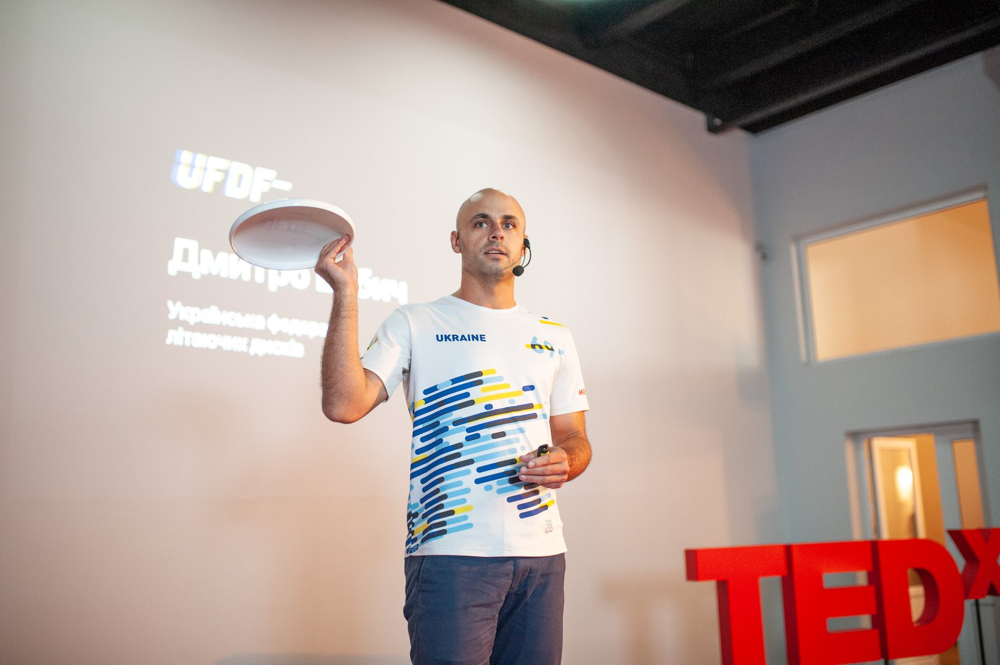
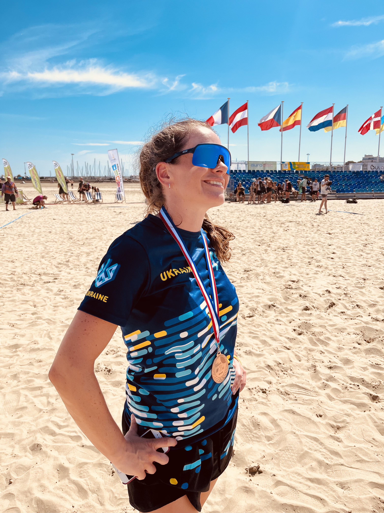
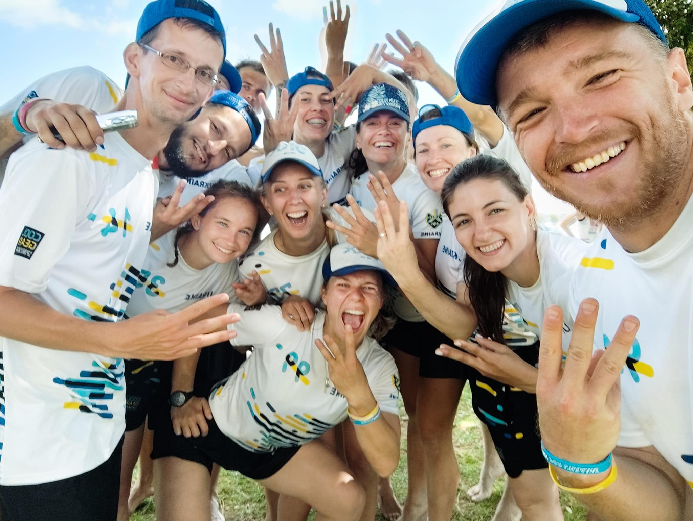
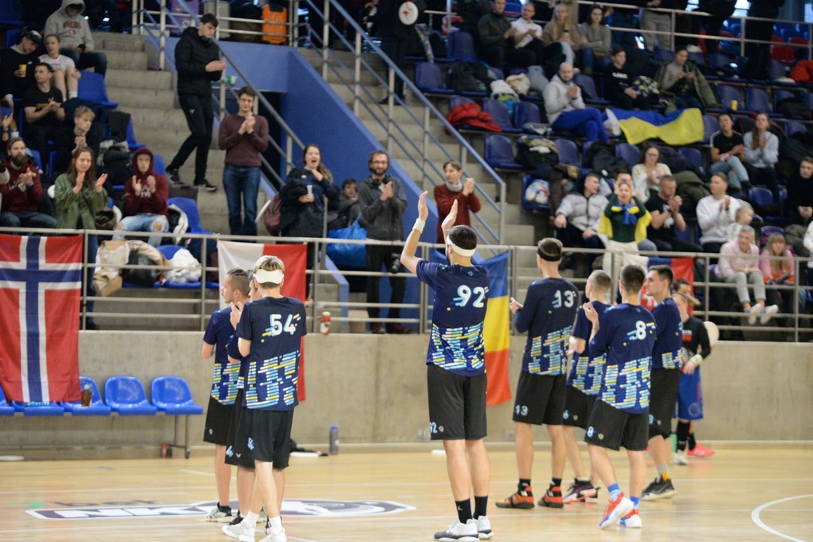
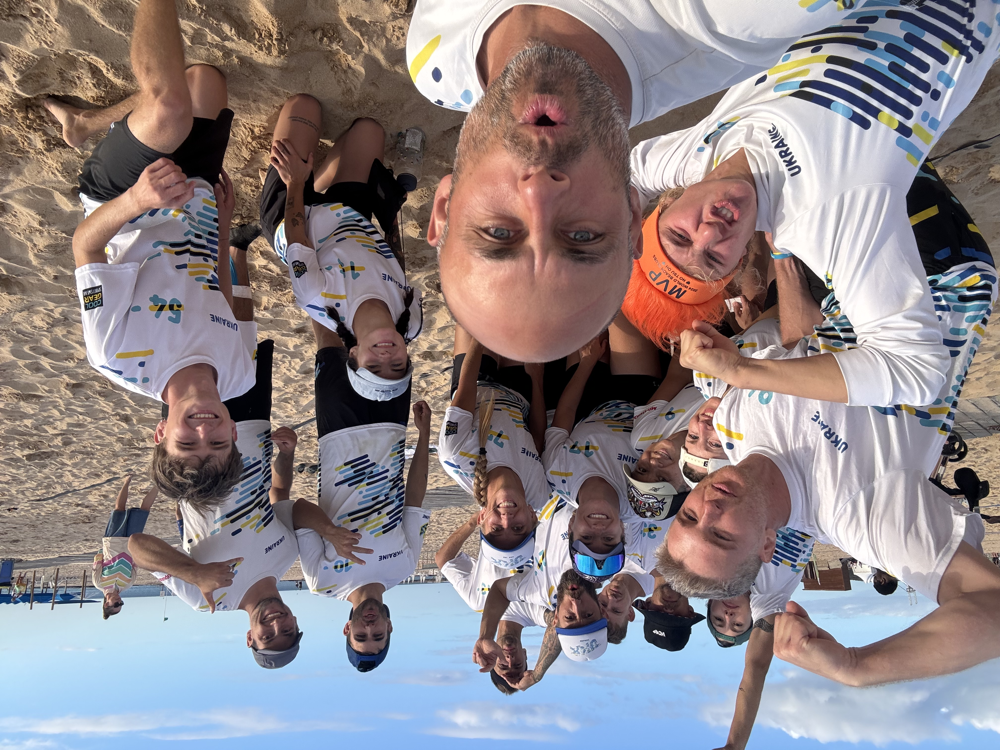
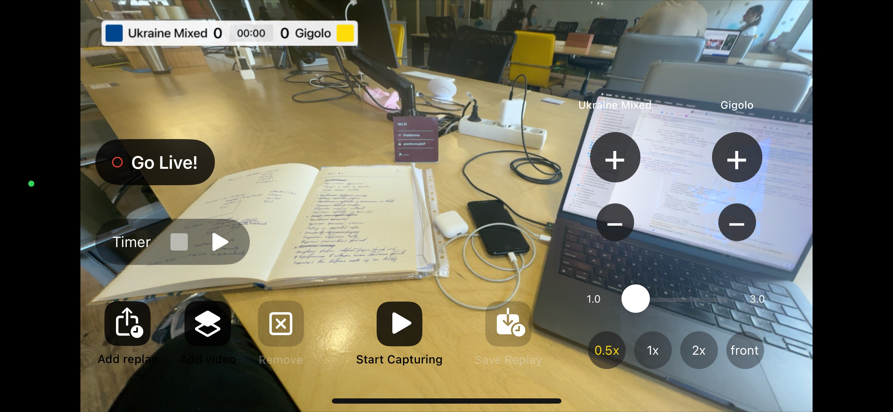
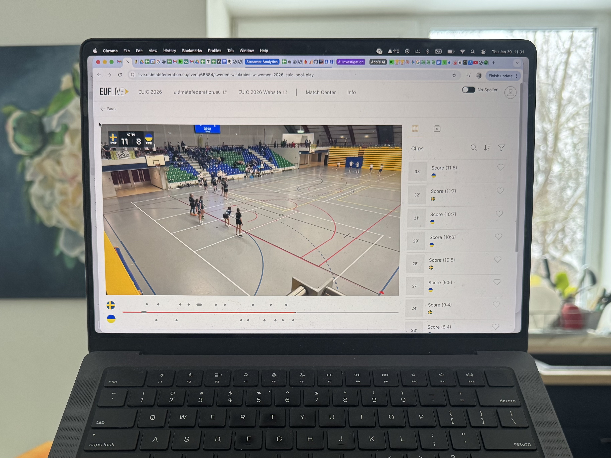

Streaming by Hand: Why Emotion Matters More Than Perfection
Live sports streaming does not always need a professional crew, multiple cameras, cables, a director, and an expensive broadcast setup.
For many amateur sports teams, youth sports clubs, small leagues, schools, and sports communities, the most important thing is much simpler: let parents, friends, teammates, and supporters watch the game live.
Even if the stream is not perfect.
Even if it is filmed from one phone.
Even if the operator is just a player on the sideline.
This is the story of how I came to that conclusion in Ukrainian ultimate, and how it eventually led me to build Ultimate Streamer — an iPhone app for live sports streaming with a scoreboard, timer, replays, sponsor graphics, and a simple mobile-first setup.
Streaming by Hand

My name is Dmytro Babych. I am the president of the Ukrainian Flying Disc Federation, a former coach of the Ukrainian national ultimate team, and the founder of a school ultimate team.
I have spent a lot of time trying to solve one practical problem: how can a small amateur sports community broadcast games without a professional production crew?
How We Tried to Stream
Over the years as president of the UFDF, I tried to solve the problem of live sports streaming for ultimate games. For a small amateur sports community with limited resources, this is a pretty difficult challenge.
At different times, we tried different combinations.
At first, we tried connecting a computer, a capture card and a regular camera. In 2018, we tried to stream the Ukrainian Championship this way, but almost nothing came of it. Poor internet, low quality.
Then we tried hiring people.
In 2019, we made an ambitious attempt to broadcast the Ukrainian Beach Championship: several cameras with operators, cables between them, a dedicated broadcast director, and a drone. The complex setup and limited budget caused a lot of problems: wired connections failed from time to time, the sound jumped, and the stream kept crashing. It did not turn out very well, and even with a significant discount, it cost us $1000.
The best attempt was with a relatively simple broadcast setup: a camera + a computer with an operator and a director. It worked well: the camera filmed from one spot, and the system was simple and fairly reliable. But it still cost money. In 2020, a 6-hour event cost us $550, and in 2025 the same contractor quoted me $2000.
For a small community with a couple of hundred people, that is a pretty significant amount.
So when COVID came, and then the full-scale war, streaming moved to the background, and we gave up on it for a while.
When Everything Changed
In 2023, our team UkrMix went to the European Beach Ultimate Championship and performed incredibly well. Among the best teams in Europe, they won bronze. It was a huge moment!

My wife played on that team, along with many friends from my club.

I sat in front of the screen, absorbing every game. At some point, I realized that I did not need a perfect picture. What mattered to me was living through that moment with my friends, my teammates, my wife. For that, I needed a live stream and a picture of decent quality. A handheld sports stream was more than enough for that.
But at that time, our players were not streaming their own games. The occasional streams from the organizers felt like a breath of fresh air. But there were too few of them.
It became clear that handheld streams are much better than no streams at all.
How We Started Streaming
During the war, many Ukrainian athletes cannot travel abroad, many serve in the Defence Forces, and a large part of the community is scattered around the world. The ability to watch our players compete internationally has become extremely important for Ukrainian ultimate players and helped keep the community connected.

Our community is small, so when a team plays at an international tournament, everyone sticks to their screens.
“Another working day gone to sh*t!” — a popular comment under yet another live stream link :)

In 2024, I became the head coach of UkrMix, the team preparing for the World Beach Ultimate Club Championships. We integrated live streaming into our preparation process and started streaming simply by hand.
It immediately became clear how important this was to everyone. Some people wrote that they were watching directly from military positions!
We streamed our games throughout the entire preparation period.
UkrMix is a strong, world-class team. In 2024, we finished 10th at the World Championship out of 53 teams.
A top team and handheld live streams?
Yes. It worked.
What You Need for a Simple Sports Live Stream

The setup for a handheld sports stream is as simple as possible:
- an iPhone or another phone with a good camera
- a person holding it
- stable mobile internet
- a YouTube channel or RTMP destination
- a streaming app
The organization is simple too.
Among the players, we assigned one person responsible for the stream. They had to make sure that before the game there was a phone ready to launch the live broadcast from. The phone had to be charged and have internet access. They also had to pass the phone to the first person who would start streaming.
After that, everything was very simple: among the players on the sideline, whoever was available first would pick up the phone and continue streaming.
It is simple.
It is cheap.
It works.
And most importantly: it matters — to our community, our families and friends, who watch the streams and cheer for us.
Why the Scoreboard Matters
For our streams, we used the standard YouTube app. But it turned out not to be enough.
The main problem was keeping viewers updated on what was happening on the field: the score and the time.
If you watch any amateur sports stream or youth sports broadcast, the main question people ask in the comments is: “What’s the score?” Even if the operator sees these questions, the only option is to say the score out loud. It is heard on the stream, and if you miss that moment, you are lost again.
It is the same with game time. Without a scoreboard on the screen, you do not understand when the game is supposed to end or what the chances of winning are.
I wanted a different solution. But not another OBS alternative with tons of settings. It had to be something simple: an app that puts a scoreboard and a timer directly onto the live stream. Something that would let me hand a phone to a player on the sideline and say: “Here’s the phone. Tap start and film the game. You update the score here. Thank you!”
What We Use for Streaming Now
I needed a sports broadcasting app that would solve our problem. I monitored the market and found two apps that covered our needs. But I did not like the quality, so I decided to build my own app.

That is how Ultimate Streamer was born — an app that turns an iPhone into a convenient tool for live sports streaming with a scoreboard, timer display and even instant replays.
Using my experience as a developer and AI, I built an MVP in a couple of months and launched it for testing in the summer of 2025.
To create a stream with it, minimal preparation required:
- install the app on an iPhone
- prepare a logo with a transparent background to be displayed on the screen
- prepare an image that will be used as the YouTube thumbnail
- optionally prepare videos and animations to insert during the live stream
- configure your YouTube channel for live streaming in advance
- authorize in the app with your YouTube account
And after that — just 1 minute before the game to choose colours and enter the text. Tap “Go Live!” — and you are on air.
It was so simple that we turned streaming into a regular process. After some time, other clubs in Ukraine started streaming and broadcasting their games too, bringing new life to the federation’s YouTube channel.
When Handheld Streaming Is Enough
Handheld streaming is not shameful, nor is it “unprofessional”. It is normal.
If a game matters to your team, to parents, to friends, to the community — it is worth showing.
Even if the phone shakes a little, or the operator gets distracted. It is better than silence, and better than a post two days later saying: “We won 13:11, it was great.”
Because live is different. Live lets people be inside the moment.

This is especially true for amateur sports and youth sports, where a simple live stream can mean a lot to parents, players, coaches and supporters.
A simple iPhone sports stream can be enough for:
- youth sports tournaments
- school games
- amateur leagues
- club matches
- training games
- small federations
- local championships
- community sports events
And if all it takes is one iPhone and one person next to the field — then it can already be done.
Not someday.
Now.
* * *
One Operator. One Phone. Live.
In 2025, I was the coach of the Ukrainian mixed national ultimate team. In November 2025, we competed at the World Beach Ultimate Championship.
Our community cheered for us and supported us.
And we streamed our games live for them:
- one operator
- one phone
- by hand
Not every game needs a professional broadcast crew.
Sometimes, the best broadcast is the one that actually happens.
Start Streaming with Ultimate Streamer
Ultimate Streamer helps coaches, clubs, teams, parents, and tournament organizers broadcast live sports from an iPhone.
You can stream to YouTube or RTMP, add a scoreboard and timer, show team names and colours, create instant replays, display logos, and make your amateur or youth sports stream look more professional without a complex setup.
Download Ultimate Streamer on the App Store and start your next live sports broadcast with just an iPhone.